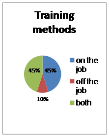
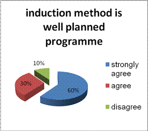
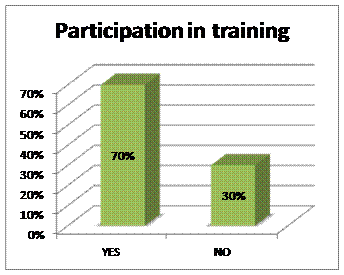
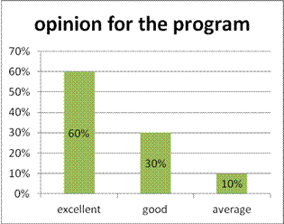
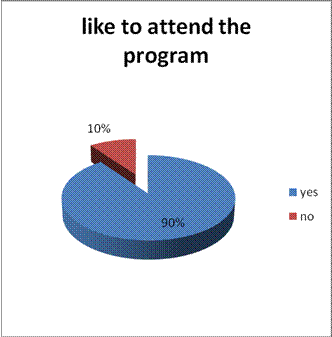
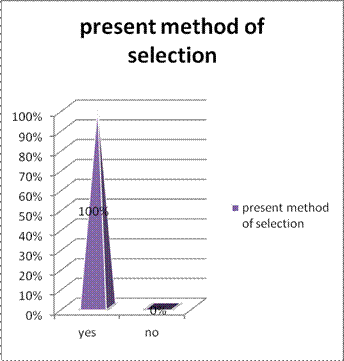
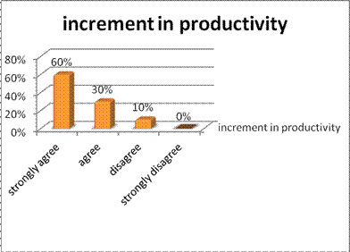
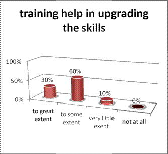

Paper Title :
TO IDENTIFY THE TRAINING AND DEVELOPMENT PRACTICES FOLLOWED IN ORGANISATION
A case study of Birla Cement Work, Rajasthan
Abstract
This a part of study conducted on the employees of Birla Cement Work Rajasthan. This study deals with the training and development practices followed for the employees in the organization.
Authors
Ms. Anupa Chaudhary, Member IJTEMT, IEDRC
Assistant Professor
Seemant Institute of Technology, Pithoragarh
Uttarakhand Technical University, Dehradun
Paper Transcript of Paper Titled :
TO IDENTIFY THE TRAINING AND DEVELOPMENT PRACTICES FOLLOWED IN ORGANISATION
A case study of Birla Cement Work, Rajasthan
To Identify The Training And Development Practices Followed In Organisation
A case study of Birla Cement Work, Rajasthan
Ms. Anupa Chaudhary, Member IJTEMT, IEDRC
Assistant Professor
Seemant Institute of Technology, Pithoragarh
Uttarakhand Technical University, Dehradun
Abstract—This a part of study conducted on the employees of Birla Cement Work Rajasthan. This study deals with the training and development practices followed for the employees in the organization.
Keywords-training and development; employees; employees performance; work commitment; organisation development;
Introduction
For any organization human resource is the only asset which can appreciate with time if provided with proper inputs. The performance of an individual in an organization is dependent on different direct and/or indirect variables. Direct which has immediate impact on the performance of an individual whereas indirect are those which affects the performance after following a systematic approach which can enhance their work commitment and hence performance. Among all those variables training and development activities taken by the human resource department of any organization is one of them. Training is broadly defined as an instructor lead content based intervention which is done to develop a desired change in the behavior of an individual so that he/she can perform the same task repeatedly with more efficiency and accuracy; it is short time horizon approach. Whereas development is long time horizon approach, targeting on overall grooming of an individual for improving his/her on the job and off the job decision making ability and hence improved higher level of work as well as personal life satisfaction. Considering the aspect of importance of human resource in an organization this study is conducted on the employees of Birla cement work, Rajasthan for identifying training and development practices followed in the organization for its employees.
Birla Cement Works (BCW) was commissioned in February 1967, the first dry process plant with two stage suspension pre-heating technology in the country. Chief Minister of Rajasthan, Late Shri M.L.Sukhadia in the year 1962, laid the foundation stone of Birla Cement and the plant started functioning in the year 1967. Its initial capacity of 2 lakh tones was increased to 4 lakh tones in 1992. In a major modernization drive, the two stages pre-heater was converted into 5-stage per heater and a modern computerized system were installed.
With the new technologies and environment friendly atmosphere, manufacturing cement, Birla Corporation Limited, installed a new plant in the year 1986 called as “Chittor Cement Works”. CCW is equipped with state-of-the-art equipments like five stage per heater, in-line clinker, Hot ESP etc. were commissioned in 1986. A central computerized control system with X-Ray analyzer and the other sophisticated quality control systems have been provided to ensure the best quality control systems have been provided to ensure the best quality cement production. Technological up-gradation being an on-going policy of the company, this unit was also modernized and its production capacity increased from 5 lakhs per annum to 8 lakhs per annum, thereby raising the total production capacity at Chittorgarh to 14 lakhs per annum
BCW was the 1st cement plant in the country to install Electrostatic Precipitators (ESP’s) in order to control the dust emission. To further improve the efficiency of ESP’s, gas-conditioning towers have been installed and bag dust collectors have also been provided at all material transfer point in both the units.
Today as many as 11 ESP’s and 57 bag dust collectors are functioning efficiently to control and maintain the emission levels well below the Air Pollution Control Act. “ENVIROCARE MICROMIST” water spray system imported from USA has been installed in both the kilns of B.C.W. and C.C.W.
It is probably the 1st plant in the country to have such sophisticated equipment and “state-of-the-art technology”. India’s 1st “HOT PULSE” ESP was installed in C.C.W. in view of the perennial water shortage in the area. Apart from these, measures like water spraying tree plantation and covered storage are undertaken to keep the atmosphere clean. Not only this, but also “Dry Coal Benefaction plant” is also available.
Review of Literature
For any organization Training & Development can be defined as “It is any attempt to improve current or future employee performance by increasing an employees’ ability to perform through learning, usually by changing the employees’ attitude or increasing his or her skills and knowledge.
According to Edwin B. Flippo, “Training is the act of increasing the knowledge and skill of an employee for doing a particular job”
Training is an organized activity for increasing knowledge and skills of people for a definite purpose. It involves systematic procedures for transferring technical know-how to employees so as to increase their knowledge and skills for doing a specific job with proficiency. In other words, the trainees acquire technical knowledge, skills and problem solving ability by undergoing the training programme.
Training is a:
Process of learning a sequence of programmed behavior.
It is an application of knowledge.
It attempts to improve their performance on current job or prepare them for an intended job.
Training is an organized process for increasing the knowledge & skills of people for doing a particular job.
It is a learning process involving the acquisition of skills and attitudes
It is a continuous process
It is a service function, providing management with professional support in meeting the organization’s objectives
It is concerned with people, relationship and organizational success
Development refers to the learning opportunities designed to help employees grow while Training refers to the process of imparting specific skills.
T&D offers competitive advantage to a firm by removing performance deficiencies; making employees stay long; minimized accidents, scraps and damages; and meeting future employee needs.
Benefits of Employee Training
Benefits to the organization:-
Leads to improved profitability and more positive attitudes towards profit orientation.
Improves job knowledge and skills at all levels of the organization
Helps people identify with organizational goals
Improves the morale of the workforce
Helps to create a better corporate image
Fosters authentically, openness and trust
Improves relationships between Boss & Sub-ordinates
Helps to prepare guidelines for work
Aids in understanding & carrying out organizational policies
Aids in increasing productivity and quality of work
develops a sense of responsibility to the organization for being competent and knowledgeable
Stimulates preventive management as opposed to putting out fires
Benefits to Individuals:-
helps the individual in making better decisions and effective problem solving
Through T&D, motivational variables of recognition, achievement, growth, responsibility and advancement are internalized and operationalized.
Aids in encouraging and achieving self-development and self-confidence
Helps a person handle stress, tension, frustration and conflict
Increases job satisfaction and recognition
Moves a person towards personal goals while improving interactive skills
Satisfies personal needs of the trainer and trainee
Develops a sense of growth in learning
Benefits in Personnel & Human Relations, Intra-group & Inter-group Relations:-
Improves communication between groups and individuals
Aids in orientation for new employee and those taking new jobs through transfer or promotion
Provides information on equal opportunity and affirmative action
Provides a good climate for learning, growth and co-ordination
Build cohesiveness in groups
Makes the organization a better place to work and live
Analysis and Findings Of The Study
A questionnaire based study is conducted on middle level managers with a sample size of 50. And following are the findings:
What kind of training method do you prefer?

This observation indicates that the employees are quite aware about their learning event and know which technique will help them to have higher level of learning.
The induction training is well planned exercise in the organisation

60 % of strongly agree and 30 % of agree response depicts that the human resource department is conducting a well planned induction program which is helping the employees to unlearn their previous believes and get oriented with the values believes and culture of the new organization for a sooth performance and higher level of satisfaction in the organization.
Are you participating in training actively

A 70 % active participation of employees in training and development activities indicates the efficiency of formulated training policies of the organization. However the point of concern is un-involvement of 30% of employees. Their involvement might be increased using a better way of communicating advantages of training and development practices for them and conducting counseling sessions for them.
What is your opinion for the training programme conducted in organisation?

This is a good situation for the organization where 90% of the respondents have rated that the training programs are either good or more than that in standard.
Do you like to attend the training programme?

Their response of 90% to attend the training programme indicates that the concept of learning organization is prevalent their and the employees know that these training and development practices are a step towards their enhanced performance and hence higher level of job satisfaction.
Are you satisfied with present method of selection of candidate for training?

Their response of 100 % is an indication to the effectiveness and importance of analysis of organizational training needs. This shows that the organization is providing due importance to analysis of organizational training need training and selecting the candidates on the basis of needs so identified.
Training program helped to increase the productivity of both quality and quantity?

This is an indication of perseverance of training among the employees for enhancing their productivity. Training is a tool for enhancing the productivity, both qualitatively and quantitatively, and the response of employees is a clear indication that training practices in the organization are able to meet their targets.
Does the training help you to upgrade soft skills like communication skills, leadership .team building etc?

From the above data it can be interpreted that the key concern of any organization i.e. skill up-gradation through training, is quite a successful in the organization.
Conclusion and Interpretaion
Based on the data collected after the survey in administration block of BCW/CCW, statistically studying the data and later on analyzing the data, Interpretation about the Training and Development Programme developed by HR Department is as follows:
1. Training is provided to the individuals is On the Job training so that their attendance is counted accordingly, rather than a leave to be awarded.
2. The individuals can themselves decide whatever the training programme they want to attend but have to be informed to the HR Department. Also, department heads decides to whom training programme is to be provided.
This shows that Department Heads are active towards their sub-ordinates activities.
3. Sharing of the views with peers and supervisors and installing those new ideas in the daily working conditions is highly appreciable
This indicates the Healthy Working Culture Environment among Supervisors; Peers and Sub-ordinates
4. Agreeableness towards T&D Programme to be problem solving device and Enhancement in self-productivity shows that employees are eager to work with the Changing Culture and Technology of the society.
Suggestions
Making training and development process an entirely in house activity to reduce cost.
The trainees should fill the feedback form and from time to time, test should be conducted to know the gauge of the effectiveness of training to employee to check their memory if they retain anything or not.
Stress management training should be more emphasized for employee as it was observed that people are all the time in tension like situation as: how to do, what to do, when to do, no time and things like that which kept them tensed all time
Most importantly, during training session employees are not co-operative and they tend to move out during the session for their private works. Thus, a watch towards it is very essential.
References
K.Ashwathappa “Human resource& personnel management” Tata Mc grew hill Publishing Co. Ltd, New Delhi, 4 Edition, New Edition,pp.120-125, 159-161.
Chaudhary, A., Prasad, S., Training for Development of Professional Education, IJIMT, Vol. 2, No. 2, April, 2011, ISSN: 2010-0248, pp. 162-165.
Prasad, S., Chaudhary, A., & Prasad, S., Training System- A Perspective. IJIMT, Vol. 2, No. 1, February, 2011, ISSN: 2010-0248, pp.69-72.
Chaudhary, A., Prasad, S., Human Resource Financial Management, IJTEF, Vol. 1, No. 4, Dec, 2010, 2010-023X, pp. 342-344.
Prasad, S., Chaudhary, A., & Prasad, S., Training System for Education Industry. IJTEF, Vol. 2, No. 3, June, 2011, ISSN: 2010-023X, pp.200-203.
S.S.Khanka “Human Resource Management (Text and Cases)”, S.Chand 2003, (reprint) 2010 pp.107-115
C.B.Mamoria “Personnel Management”, Himalaya publishing house, Bombay, 1996.
Michael Armtrong, “A Handbook of Human Resource M management”, Aditiya Books Private Limited, New Delhi, 1992.
Prasad, S., Chaudhary, A., & Prasad, S., Training System- A Perspective. IJIMT, Vol. 2, No. 1, February, 2011, ISSN: 2010-0248, pp.69-72.
Corporate profile of Company.
http://www.birlacorporation.com
http://www.citehr.com
http://slideshare.net/firdaus-zailani/training-and-development-ppt
http://www.managementstudyguide.com